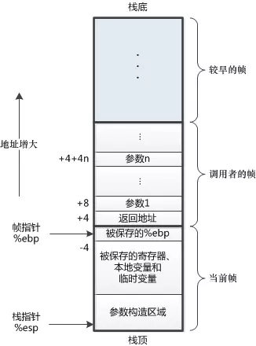
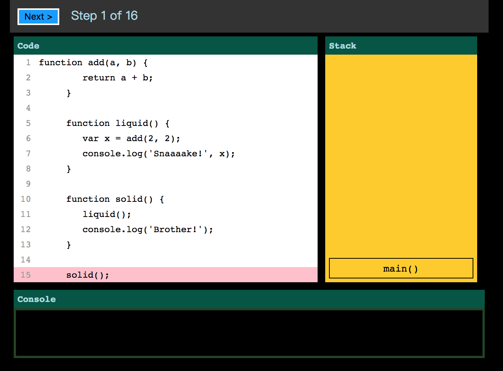
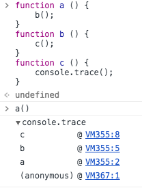
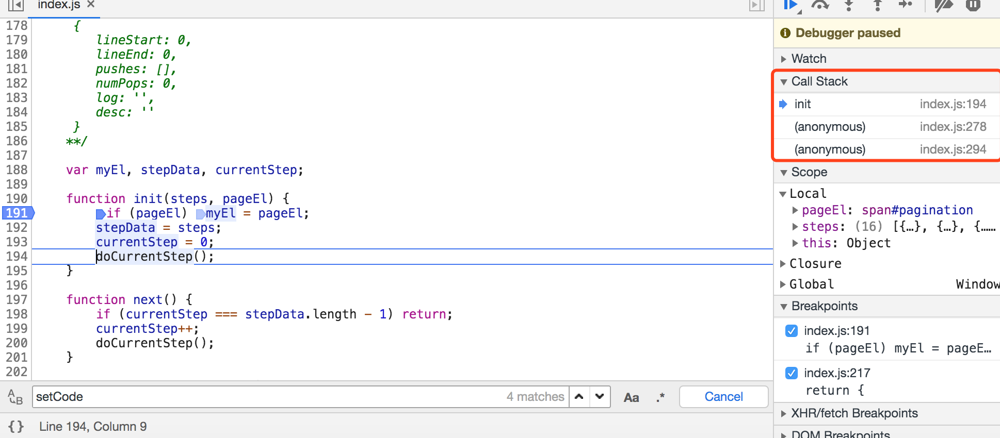
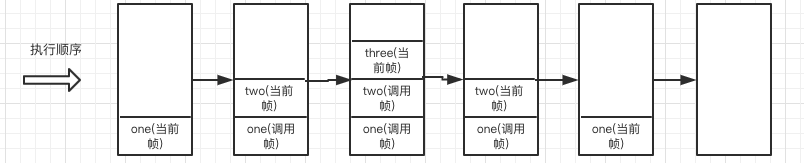
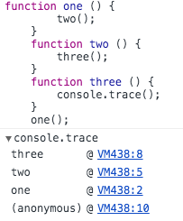

简介
首先解释什么是尾递归和尾调用，后面再来解释什么是斐波拉契数列，怎么用JavaScript实现斐波拉契数列，尾递归和它有什么关联。
本文文章大致章节如下：
- 理解调用栈
- 什么是尾调用和尾调用优化
- 什么是尾递归
- 什么是斐波拉契数列
通过上面的几个章节一步一步加深理解。
调用栈
首先要了解什么是调用栈，后面才能更好的了解尾递归和尾调用。
调用栈是解释器（就像浏览器中的JavaScript解释器）追踪函数执行流的一种机制。简单来说就是能够通过调用栈追踪到那个函数正在执行，执行的函数中又调用了那个函数。可能这样说还是不太具体，我们可以把它更具体一下。
首先引入一个概念：栈帧，栈帧是指一个函数调用单独分配的那部分栈空间。栈帧中有两种比较重要的帧当前帧、调用帧，先看一张图：

当运行中的程序调用另一个函数时，就要进入一个新的栈帧，原来函数的栈帧称为调用者的帧，新的栈帧称为当前帧。
那么调用栈大致是怎么执行的呢？大致步骤如下：
- 每调用一个函数，解释器就会把该函数添加进
调用栈并开始执行。 - 正在
调用栈中执行的函数(调用者帧)还调用了其它函数，那么新函数(当前帧)也将会被添加进调用栈，一旦这个函数被调用，便会立即执行。 新函数(当前帧)执行完毕后，解释器将其清出调用栈，继续执行执行的函数(调用者帧)环境下的剩余的代码。- 当分配的
调用栈空间被占满时，会引发“堆栈溢出”(递归爆栈)。
在线代码体验调用栈执行过程，如果访问比较慢可以看调用栈执行过程demo把代码下载到本地运行查看。
执行效果大致如下：

因为gif文件过大，就放一张图片好了。
调试
我们也可以通过chrome中的控制台，通过console.trace()来追踪当前的调用栈，如下图所示：

或者通过在代码中打断点调试看到当前调用栈：

其实调用栈和事件轮询(event loop)有很大的关联，如果对事件轮询(event loop)有兴趣的话看我另一篇文章事件轮询/事件模型。
尾调用和尾调用优化
尾调用
尾调用是函数式编程中一个很重要的概念，当一个函数执行时的最后一个步骤是返回另一个函数的调用，这就叫做尾调用。
什么样算尾调用，什么不算尾调用呢？
注意这里函数的调用方式是无所谓的，以下方式均可：
1 | 函数调用: func(···) |
并且只有下列表达式会包含尾调用：
1 | 条件操作符: ? : |
不是尾调用的实例
1 | // 不是尾调用 调用函数后还有复制操作 |
是尾调用的实例
1 | // 尾调用正确示范1.0 |
这个就是尾调用，下面我们就可以通过尾调用去优化执行栈的调用过程。
尾调用优化
函数在调用的时候会在调用栈（call stack）中存有记录，每一条记录叫做一个调用帧（call frame），每调用一个函数，就向栈中push一条记录，函数执行结束后依次向外弹出，直到清空调用栈，参考下图：
1 | function one () { |
执行过程如下下图所示：

我们在一个函数中调用另一个函数，但是并没有通过return来结束当前函数的执行，JS引擎会认为当前的函数并没有执行完成，会在执行当前函数调用的函数，等他执行完成才会释放当前函数。
one函数执行时，会把one函数添加进调用栈中，one函数现在为当前帧。- 在
one函数中又调用了two函数，当时在调用two函数时没有return，所以会把two函数添加进调用栈。现在one函数为调用者帧，而two函数为当前帧 - 在
two函数中又调用three函数，执行过程与two函数执行相同。 - 当
three函数执行完成时（默认返回undefined），three函数就会被调用栈弹出并且被销毁。再在后面逐步销毁two函数、one函数，到此调用栈为空。
下面通过尾调用优化，修改代码如下：
1 | “use strict”; |
执行效果如下图所示：

one函数执行时，会把one函数添加进调用栈中，one函数现在为当前帧。- 在
one函数中又调用了two函数，当时在调用two函数添加了return，调用栈会把one函数弹出，当前调用栈中只有一个two函数。 - 在
two函数中又调用three函数，因为有return当前调用栈中只有three函数。 - 当
three函数执行完成后，调用栈弹出three函数，此时调用栈当前为空。
注意： 无论是通过
console.trace(),还是通过chrome断点查看call stack都并没有改变调用栈，意思就是和上面的一样，应该是chrome禁止了尾调用优化。(暂无找到原因–我佛了)
safari中是好的
尾递归
递归
递归是指在函数的定义中使用函数自身的一种方法。函数调用自身即称为递归。
1 | function foo () { |
这是一个死循环，会造成页面或者进程假死，也就是堆栈溢出。
尾递归
当一个函数在最后调用自身就叫做尾递归。
1 | function foo () { |
尾调用优化只在严格模式下有效。
尾调用优化后，每次return的内层函数的调用记录会取代外层函数的调用记录，调用栈中始终只保持了一条调用帧。
尾递归作用
比如我们要实现一个阶加，可以用尾递归实现，下面直接上代码。
环境chrome 78.0.3904.70，硬件mac pro 16G i5。
1 | function factorial (num) { |
根据我们上面知道调用栈的知识，如果我们传入一下100000，它在执行过程中它会把每次执行的函数添加进调用栈，只有在最后被调用的函数执行完成，才会把调用栈中的函数一个个弹出和销毁。100000个函数已经超出了浏览器最大的内存范围了，所以会造成栈溢出错误。
即使加上"use strict";也还是会报错。
尾调用优化和尾递归在firfox和chrome中会报错，safari在尾优化不会报错但是尾递归还是会报错。
如果真的想感受尾优化的威力可以去node v.6.x版本中通过--harmony_tailcalls参数，node新的版本并已经移除了这个参数
斐波拉契数列
斐波那契数列（Fibonacci sequence），又称黄金分割数列、因数学家列昂纳多·斐波那契（Leonardoda Fibonacci）以兔子繁殖为例子而引入，故又称为“兔子数列”，指的是这样一个数列：1、1、2、3、5、8、13、21、34、……
简单的说，斐波那契数列中的每一项都是前两项的和。
即F(1)=1，F(2)=1, F(n)=F(n-1)+F(n-2)（n>2，n∈N*）
基础版本
我们通过递归实现
1 | function factorial (num) { |
我们通过console.trace()可以看到在执行过程中，调用栈中最多会存在4个函数信息，这十个信息是每一层次调用的详细信息（如参数、局部变量、返回地址等等），以确保该层次的操作完成，这也是造成栈溢出的原因。
测试代码：
1 | factorial(4); |
尾递归版本
通过尾递归来优化上面的问题，其实在现在浏览器或者node中都没有作用。
1 | ; |
测试代码：
1 | // 测试代码 |
可以发现当使用尾递归优化时，展开看到的调用栈中只会有当前执行的函数，不会储存上层的数据，这样就会减少内存的使用。尾递归的本质实际上就是将方法需要的上下文通过方法的参数传递进下一次调用之中，以达到去除上层依赖。
chrome/firefox测试无效，node新版本测试无效
Proper tail calls have been implemented but not yet shipped given that a change to the feature is currently under discussion at TC39.意思就是人家已经做好了，但是就是还不能。
尾递归的问题
- 首先，由于引擎
消除尾递归是隐式的，函数是否符合尾调用而被消除了尾递归很难被程序员自己辨别。 - 其次，尾调用优化
要求除掉尾调用执行时的调用堆栈，这将导致执行流中的堆栈信息丢失。
多种实现方式
循环实现
可以通过循环实现，代码如下：
1 | function factorial (n) { |
公式实现
通过Math来实现，代码如下：
1 | // 公式法 |
函数柯里化
通过柯里化实现，代码如下
1 | function tailCalls (num, num1, num2) { |
其实上面的柯里化只能称为模仿柯里化实现。
性能对比
我们把普通递归、尾递归、普通循环、公式法、柯里化它们的性能对比。
1 | // 普通递归 |
我们可以通过上面的测试，可以看到递归速度都是比较慢的，循环的速度是比较快的。
- 慎用直接递归的方式，不仅会带来极差的运行效率，同时会导致浏览器直接无响应。
- 尾递归有着与循环同样优秀的计算性能，使用尾递归可以同时拥有着循环的性能以及递归的数学表达能力。
PTC与STC
ES6标准规定了 尾调用不会创建额外的调用帧。
在严格模式下 尾调用不会造成调用栈溢出。Proper Tail Calls(PTC)已经实现了，但是还未部署，该功能仍然在TC39标准委员会中讨论。
PTC
什么是Proper Tail Calls(PTC)?如果有兴趣可以去看原文的解释原文。
Typically when calling a function, stack space is allocated for the data associated with making a function call. This data includes the return address, prior stack pointer, arguments to the function, and space for the function’s local values. This space is called a stack frame. A call made to a function in tail position will reuse the stack space of the calling function.
简单来说就是比如说一个递归程序，我们调用函数时，内存会帮函数分配返回地址、先前堆栈指针、内部变量参数称为stack frame。在尾部位置对函数的调用将重用调用函数的堆栈空间。
要触发PTC就要满足一下条件：
strict mode严格模式下- 普通函数或者箭头函数
- 不能是生成器(generator)函数
- 被调用函数的返回值由调用函数返回。
PTC是能提升性能的一种策略，但是他也存在很多的限制。
PTC存在的限制
兼容性
因为在推行一些新的策略或者方案是，就是标准是否支持它，也就是兼容性。标准的兼容性、浏览器的兼容性是一段很长的路。
调试难度
在PTC的实现中，许多调用帧都被抛弃了，导致很难再调用栈中调试他们的代码。
1 | // 举个例子 |
Error.stack
启用PTC导致Javascript异常有了不一致的error.stack信息。
1 | /* |
STC
语义上的尾调用（Syntactic Tail Call）是针对上述PTC的问题而提出的建议。
STC采用类似于 return continue 的语法来明确标识出要进行尾调用优化，而在非尾调用的场景下使用该语法会抛出语法错误异常。
该语法有三种实现形式：
语法级
1 | function factorial(n, acc = 1) { |
函数级
1 | #function() { /* all calls in tail position are tail calls */ } |
表达式/调用点
1 | function () { |
总结
通过本篇文章了解了什么是调用栈、尾调用、尾调用、斐波拉切数列，怎么实现斐波拉切数列，多种方法对比。
尽量少使用递归因为递归的比较消耗性能，虽然有尾递归优化但是各大浏览器都并没有部署，所以尽量使用循环来实现。
参考
JavaScript 调用栈、尾递归和手动优化
尾调用优化——记一道面试题的思考
朋友你听说过尾递归吗
尾递归的后续探究
尾调用和尾递归